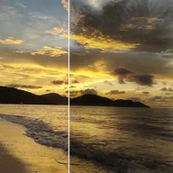

Donkere gloed

Spreidt de donkere delen van de laag uit over de lichte, als een gloed van schaduw.
Instellingen
| Instelling | Type | Bereik | Standaard |
|---|---|---|---|
| Diffusie | Getal | 0 tot 300 | 40 |
| Drempel | Getal | 0 tot 1 | 0.3 |
| Kleur | Kleur | – | #000000 |
| Mengen | Getal | 0% tot 100% | 25% |
| Alfa | Getal | 0% tot 100% | 75% |